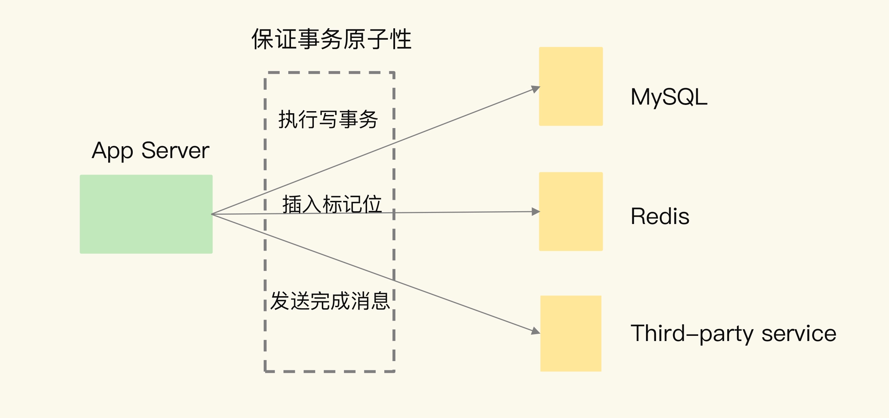

- 00 开篇词 这样学Redis，才能技高一筹.md.html
- 01 基本架构：一个键值数据库包含什么？.md.html
- 02 数据结构：快速的Redis有哪些慢操作？.md.html
- 03 高性能IO模型：为什么单线程Redis能那么快？.md.html
- 04 AOF日志：宕机了，Redis如何避免数据丢失？.md.html
- 05 内存快照：宕机后，Redis如何实现快速恢复？.md.html
- 06 数据同步：主从库如何实现数据一致？.md.html
- 07 哨兵机制：主库挂了，如何不间断服务？.md.html
- 08 哨兵集群：哨兵挂了，主从库还能切换吗？.md.html
- 09 切片集群：数据增多了，是该加内存还是加实例？.md.html
- 10 第1～9讲课后思考题答案及常见问题答疑.md.html
- 11 “万金油”的String，为什么不好用了？.md.html
- 12 有一亿个keys要统计，应该用哪种集合？.md.html
- 13 GEO是什么？还可以定义新的数据类型吗？.md.html
- 14 如何在Redis中保存时间序列数据？.md.html
- 15 消息队列的考验：Redis有哪些解决方案？.md.html
- 16 异步机制：如何避免单线程模型的阻塞？.md.html
- 17 为什么CPU结构也会影响Redis的性能？.md.html
- 18 波动的响应延迟：如何应对变慢的Redis？（上）.md.html
- 19 波动的响应延迟：如何应对变慢的Redis？（下）.md.html
- 20 删除数据后，为什么内存占用率还是很高？.md.html
- 21 缓冲区：一个可能引发“惨案”的地方.md.html
- 22 第11～21讲课后思考题答案及常见问题答疑.md.html
- 23 旁路缓存：Redis是如何工作的？.md.html
- 24 替换策略：缓存满了怎么办？.md.html
- 25 缓存异常（上）：如何解决缓存和数据库的数据不一致问题？.md.html
- 26 缓存异常（下）：如何解决缓存雪崩、击穿、穿透难题？.md.html
- 27 缓存被污染了，该怎么办？.md.html
- 28 Pika：如何基于SSD实现大容量Redis？.md.html
- 29 无锁的原子操作：Redis如何应对并发访问？.md.html
- 30 如何使用Redis实现分布式锁？.md.html
- 31 事务机制：Redis能实现ACID属性吗？.md.html
- 32 Redis主从同步与故障切换，有哪些坑？.md.html
- 33 脑裂：一次奇怪的数据丢失.md.html
- 34 第23~33讲课后思考题答案及常见问题答疑.md.html
- 35 Codis VS Redis Cluster：我该选择哪一个集群方案？.md.html
- 36 Redis支撑秒杀场景的关键技术和实践都有哪些？.md.html
- 37 数据分布优化：如何应对数据倾斜？.md.html
- 38 通信开销：限制Redis Cluster规模的关键因素.md.html
- 39 Redis 6.0的新特性：多线程、客户端缓存与安全.md.html
- 40 Redis的下一步：基于NVM内存的实践.md.html
- 41 第35～40讲课后思考题答案及常见问题答疑.md.html
- 加餐 01 经典的Redis学习资料有哪些？.md.html
- 加餐 02 用户Kaito：我是如何学习Redis的？.md.html
- 加餐 03 用户Kaito：我希望成为在压力中成长的人.md.html
- 加餐 04 Redis客户端如何与服务器端交换命令和数据？.md.html
- 加餐 05 Redis有哪些好用的运维工具？.md.html
- 加餐 06 Redis的使用规范小建议.md.html
- 加餐 07 从微博的Redis实践中，我们可以学到哪些经验？.md.html
- 结束语 从学习Redis到向Redis学习.md.html
- 捐赠
18 波动的响应延迟：如何应对变慢的Redis？（上）
在 Redis 的实际部署应用中，有一个非常严重的问题，那就是 Redis 突然变慢了。一旦出现这个问题，不仅会直接影响用户的使用体验，还可能会影响到“旁人”，也就是和 Redis 在同一个业务系统中的其他系统，比如说数据库。
举个小例子，在秒杀场景下，一旦 Redis 变慢了，大量的用户下单请求就会被拖慢，也就是说，用户提交了下单申请，却没有收到任何响应，这会给用户带来非常糟糕的使用体验，甚至可能会导致用户流失。
而且，在实际生产环境中，Redis 往往是业务系统中的一个环节（例如作为缓存或是作为数据库）。一旦 Redis 上的请求延迟增加，就可能引起业务系统中的一串儿“连锁反应”。
我借助一个包含了 Redis 的业务逻辑的小例子，简单地给你解释一下。
应用服务器（App Server）要完成一个事务性操作，包括在 MySQL 上执行一个写事务，在 Redis 上插入一个标记位，并通过一个第三方服务给用户发送一条完成消息。
这三个操作都需要保证事务原子性，所以，如果此时 Redis 的延迟增加，就会拖累 App Server 端整个事务的执行。这个事务一直完成不了，又会导致 MySQL 上写事务占用的资源无法释放，进而导致访问 MySQL 的其他请求被阻塞。很明显，Redis 变慢会带来严重的连锁反应。

我相信，不少人遇到过这个问题，那具体该怎么解决呢？
这个时候，切忌“病急乱投医”。如果没有一套行之有效的应对方案，大多数时候我们只能各种尝试，做无用功。在前面的【第 16 讲】、【第 17 讲】中，我们学习了会导致 Redis 变慢的潜在阻塞点以及相应的解决方案，即异步线程机制和 CPU 绑核。除此之外，还有一些因素会导致 Redis 变慢。
接下来的两节课，我再向你介绍一下如何系统性地应对 Redis 变慢这个问题。我会从问题认定、系统性排查和应对方案这 3 个方面给你具体讲解。学完这两节课以后，你一定能够有章法地解决 Redis 变慢的问题。
Redis 真的变慢了吗？
在实际解决问题之前，我们首先要弄清楚，如何判断 Redis 是不是真的变慢了。
一个最直接的方法，就是查看 Redis 的响应延迟。
大部分时候，Redis 延迟很低，但是在某些时刻，有些 Redis 实例会出现很高的响应延迟，甚至能达到几秒到十几秒，不过持续时间不长，这也叫延迟“毛刺”。当你发现 Redis 命令的执行时间突然就增长到了几秒，基本就可以认定 Redis 变慢了。
这种方法是看 Redis 延迟的绝对值，但是，在不同的软硬件环境下，Redis 本身的绝对性能并不相同。比如，在我的环境中，当延迟为 1ms 时，我判定 Redis 变慢了，但是你的硬件配置高，那么，在你的运行环境下，可能延迟是 0.2ms 的时候，你就可以认定 Redis 变慢了。
所以，这里我就要说第二个方法了，也就是基于当前环境下的 Redis 基线性能做判断。所谓的基线性能呢，也就是一个系统在低压力、无干扰下的基本性能，这个性能只由当前的软硬件配置决定。
你可能会问，具体怎么确定基线性能呢？有什么好方法吗？
实际上，从 2.8.7 版本开始，redis-cli 命令提供了–intrinsic-latency 选项，可以用来监测和统计测试期间内的最大延迟，这个延迟可以作为 Redis 的基线性能。其中，测试时长可以用–intrinsic-latency 选项的参数来指定。
举个例子，比如说，我们运行下面的命令，该命令会打印 120 秒内监测到的最大延迟。可以看到，这里的最大延迟是 119 微秒，也就是基线性能为 119 微秒。一般情况下，运行 120 秒就足够监测到最大延迟了，所以，我们可以把参数设置为 120。
./redis-cli --intrinsic-latency 120
Max latency so far: 17 microseconds.
Max latency so far: 44 microseconds.
Max latency so far: 94 microseconds.
Max latency so far: 110 microseconds.
Max latency so far: 119 microseconds.
36481658 total runs (avg latency: 3.2893 microseconds / 3289.32 nanoseconds per run).
Worst run took 36x longer than the average latency.
需要注意的是，基线性能和当前的操作系统、硬件配置相关。因此，我们可以把它和 Redis 运行时的延迟结合起来，再进一步判断 Redis 性能是否变慢了。
一般来说，你要把运行时延迟和基线性能进行对比，如果你观察到的 Redis 运行时延迟是其基线性能的 2 倍及以上，就可以认定 Redis 变慢了。
判断基线性能这一点，对于在虚拟化环境下运行的 Redis 来说，非常重要。这是因为，在虚拟化环境（例如虚拟机或容器）中，由于增加了虚拟化软件层，与物理机相比，虚拟机或容器本身就会引入一定的性能开销，所以基线性能会高一些。下面的测试结果，显示的就是某一个虚拟机上运行 Redis 时测的基线性能。
$ ./redis-cli --intrinsic-latency 120
Max latency so far: 692 microseconds.
Max latency so far: 915 microseconds.
Max latency so far: 2193 microseconds.
Max latency so far: 9343 microseconds.
Max latency so far: 9871 microseconds.
可以看到，由于虚拟化软件本身的开销，此时的基线性能已经达到了 9.871ms。如果该 Redis 实例的运行时延迟为 10ms，这并不能算作性能变慢，因为此时，运行时延迟只比基线性能增加了 1.3%。如果你不了解基线性能，一看到较高的运行时延迟，就很有可能误判 Redis 变慢了。
不过，我们通常是通过客户端和网络访问 Redis 服务，为了避免网络对基线性能的影响，刚刚说的这个命令需要在服务器端直接运行，这也就是说，我们只考虑服务器端软硬件环境的影响。
如果你想了解网络对 Redis 性能的影响，一个简单的方法是用 iPerf 这样的工具，测量从 Redis 客户端到服务器端的网络延迟。如果这个延迟有几十毫秒甚至是几百毫秒，就说明，Redis 运行的网络环境中很可能有大流量的其他应用程序在运行，导致网络拥塞了。这个时候，你就需要协调网络运维，调整网络的流量分配了。
如何应对 Redis 变慢？
经过了上一步之后，你已经能够确定 Redis 是否变慢了。一旦发现变慢了，接下来，就要开始查找原因并解决这个问题了，这其实是一个很有意思的诊断过程。
此时的你就像一名医生，而 Redis 则是一位病人。在给病人看病时，你要知道人体的机制，还要知道可能对身体造成影响的外部因素，比如不健康的食物、不好的情绪等，然后要拍 CT、心电图等找出病因，最后再确定治疗方案。
在诊断“Redis 变慢”这个病症时，同样也是这样。你要基于自己对 Redis 本身的工作原理的理解，并且结合和它交互的操作系统、存储以及网络等外部系统关键机制，再借助一些辅助工具来定位原因，并制定行之有效的解决方案。
医生诊断一般都是有章可循的。同样，Redis 的性能诊断也有章可依，这就是影响 Redis 的关键因素。下面这张图你应该有印象，这是我们在【第一节课】画的 Redis 架构图。你可以重点关注下我在图上新增的红色模块，也就是 Redis 自身的操作特性、文件系统和操作系统，它们是影响 Redis 性能的三大要素。

接下来，我将从这三大要素入手，结合实际的应用场景，依次给你介绍从不同要素出发排查和解决问题的实践经验。这节课我先给你介绍 Redis 的自身操作特性的影响，下节课我们再重点研究操作系统和文件系统的影响。
Redis 自身操作特性的影响
首先，我们来学习下 Redis 提供的键值对命令操作对延迟性能的影响。我重点介绍两类关键操作：慢查询命令和过期 key 操作。
1. 慢查询命令
慢查询命令，就是指在 Redis 中执行速度慢的命令，这会导致 Redis 延迟增加。Redis 提供的命令操作很多，并不是所有命令都慢，这和命令操作的复杂度有关。所以，我们必须要知道 Redis 的不同命令的复杂度。
比如说，Value 类型为 String 时，GET/SET 操作主要就是操作 Redis 的哈希表索引。这个操作复杂度基本是固定的，即 O(1)。但是，当 Value 类型为 Set 时，SORT、SUNION/SMEMBERS 操作复杂度分别为 O(N+M*log(M)) 和 O(N)。其中，N 为 Set 中的元素个数，M 为 SORT 操作返回的元素个数。这个复杂度就增加了很多。Redis 官方文档中对每个命令的复杂度都有介绍，当你需要了解某个命令的复杂度时，可以直接查询。
那该怎么应对这个问题呢？在这儿，我就要给你排查建议和解决方法了，这也是今天的第一个方法。
当你发现 Redis 性能变慢时，可以通过 Redis 日志，或者是 latency monitor 工具，查询变慢的请求，根据请求对应的具体命令以及官方文档，确认下是否采用了复杂度高的慢查询命令。
如果的确有大量的慢查询命令，有两种处理方式：
- 用其他高效命令代替。比如说，如果你需要返回一个 SET 中的所有成员时，不要使用 SMEMBERS 命令，而是要使用 SSCAN 多次迭代返回，避免一次返回大量数据，造成线程阻塞。
- 当你需要执行排序、交集、并集操作时，可以在客户端完成，而不要用 SORT、SUNION、SINTER 这些命令，以免拖慢 Redis 实例。
当然，如果业务逻辑就是要求使用慢查询命令，那你得考虑采用性能更好的 CPU，更快地完成查询命令，避免慢查询的影响。
还有一个比较容易忽略的慢查询命令，就是 KEYS。它用于返回和输入模式匹配的所有 key，例如，以下命令返回所有包含“name”字符串的 keys。
redis> KEYS *name*
1) "lastname"
2) "firstname"
因为 KEYS 命令需要遍历存储的键值对，所以操作延时高。如果你不了解它的实现而使用了它，就会导致 Redis 性能变慢。所以，KEYS 命令一般不被建议用于生产环境中。
2. 过期 key 操作
接下来，我们来看过期 key 的自动删除机制。它是 Redis 用来回收内存空间的常用机制，应用广泛，本身就会引起 Redis 操作阻塞，导致性能变慢，所以，你必须要知道该机制对性能的影响。
Redis 键值对的 key 可以设置过期时间。默认情况下，Redis 每 100 毫秒会删除一些过期 key，具体的算法如下：
- 采样 ACTIVE_EXPIRE_CYCLE_LOOKUPS_PER_LOOP 个数的 key，并将其中过期的 key 全部删除；
- 如果超过 25% 的 key 过期了，则重复删除的过程，直到过期 key 的比例降至 25% 以下。
ACTIVE_EXPIRE_CYCLE_LOOKUPS_PER_LOOP 是 Redis 的一个参数，默认是 20，那么，一秒内基本有 200 个过期 key 会被删除。这一策略对清除过期 key、释放内存空间很有帮助。如果每秒钟删除 200 个过期 key，并不会对 Redis 造成太大影响。
但是，如果触发了上面这个算法的第二条，Redis 就会一直删除以释放内存空间。注意，删除操作是阻塞的（Redis 4.0 后可以用异步线程机制来减少阻塞影响）。所以，一旦该条件触发，Redis 的线程就会一直执行删除，这样一来，就没办法正常服务其他的键值操作了，就会进一步引起其他键值操作的延迟增加，Redis 就会变慢。
那么，算法的第二条是怎么被触发的呢？其中一个重要来源，就是频繁使用带有相同时间参数的 EXPIREAT 命令设置过期 key，这就会导致，在同一秒内有大量的 key 同时过期。
现在，我就要给出第二条排查建议和解决方法了。
你要检查业务代码在使用 EXPIREAT 命令设置 key 过期时间时，是否使用了相同的 UNIX 时间戳，有没有使用 EXPIRE 命令给批量的 key 设置相同的过期秒数。因为，这都会造成大量 key 在同一时间过期，导致性能变慢。
遇到这种情况时，千万不要嫌麻烦，你首先要根据实际业务的使用需求，决定 EXPIREAT 和 EXPIRE 的过期时间参数。其次，如果一批 key 的确是同时过期，你还可以在 EXPIREAT 和 EXPIRE 的过期时间参数上，加上一个一定大小范围内的随机数，这样，既保证了 key 在一个邻近时间范围内被删除，又避免了同时过期造成的压力。
小结
这节课，我首先给你介绍了 Redis 性能变慢带来的重要影响，希望你能充分重视这个问题。我重点介绍了判断 Redis 变慢的方法，一个是看响应延迟，一个是看基线性能。同时，我还给了你两种排查和解决 Redis 变慢这个问题的方法：
- 从慢查询命令开始排查，并且根据业务需求替换慢查询命令；
- 排查过期 key 的时间设置，并根据实际使用需求，设置不同的过期时间。
性能诊断通常是一件困难的事，所以我们一定不能毫无目标地“乱找”。这节课给你介绍的内容，就是排查和解决 Redis 性能变慢的章法，你一定要按照章法逐一排查，这样才可能尽快地找出原因。
当然，要真正把 Redis 用好，除了要了解 Redis 本身的原理，还要了解和 Redis 交互的各底层系统的关键机制，包括操作系统和文件系统。通常情况下，一些难以排查的问题是 Redis 的用法或设置和底层系统的工作机制不协调导致的。下节课，我会着重给你介绍文件系统、操作系统对 Redis 性能的影响，以及相应的排查方法和解决方案。
每课一问
这节课，我提到了 KEYS 命令，因为它的复杂度很高，容易引起 Redis 线程操作阻塞，不适用于生产环境。但是，KEYS 命令本身提供的功能是上层业务应用经常需要的，即返回与输入模式匹配的 keys。
请思考一下，在 Redis 中，还有哪些其他命令可以代替 KEYS 命令，实现同样的功能呢？这些命令的复杂度会导致 Redis 变慢吗？
欢迎在留言区写下你的思考和答案，我们一起讨论，共同学习进步。如果你觉得有所收获，欢迎你把今天的内容分享给你的朋友。
© 2019 - 2023 Liangliang Lee. Powered by gin and hexo-theme-book.